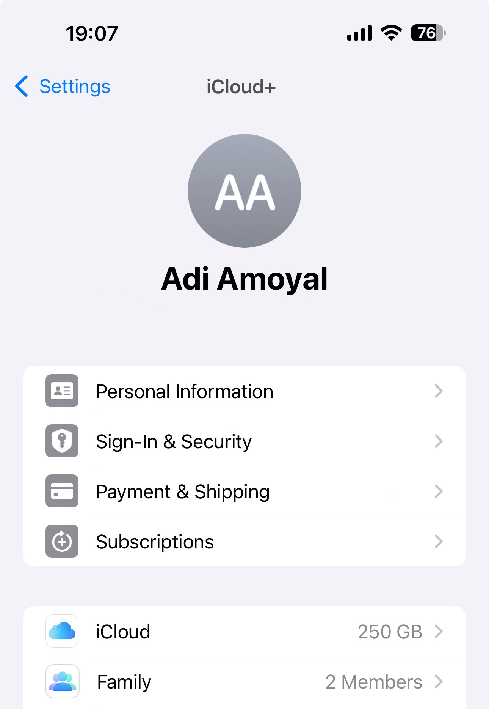

Why You Should Back Up Your iPhone
Backing up your iPhone ensures that your important data, like photos, contacts, and apps, are saved in case you lose or damage your device. There are two main ways to back up your iPhone: using iCloud or your computer. This guide will walk you through the steps for both methods.
Step 1: Back Up with iCloud
Backing up with iCloud is easy and automatic. Here's how:
- Connect your iPhone to a Wi-Fi network.
- Go to Settings > Your Name > iCloud.
- Select iCloud Backup.
- Tap Back Up Now.
Step 2: Check Your iCloud Backup
To verify your backup, follow these steps:
- Go to Settings > Your Name > iCloud > Manage Storage.
- Tap Backups to view the latest backup details.
Step 3: Back Up with a Computer
If you prefer not to use iCloud, you can back up your iPhone using a Mac or PC. Here’s how:
- Connect your iPhone to your computer using a USB cable.
- On a Mac with macOS Catalina or later, open Finder. On a PC, open iTunes.
- Select your iPhone when it appears on your computer.
- Click Back Up Now.
Step 4: Restore from a Computer Backup
If you need to restore your iPhone from a backup stored on your computer, follow these steps:
- Connect your iPhone to your computer using a USB cable.
- On a Mac with macOS Catalina or later, open Finder. On a PC or older macOS versions, open iTunes.
- Select your iPhone when it appears on your computer.
- In the General tab or Summary tab (depending on your system), click Restore iPhone.
- Choose the backup you want to restore from, and click Restore.
- Wait for the process to complete. Keep your iPhone connected during the entire restoration process.